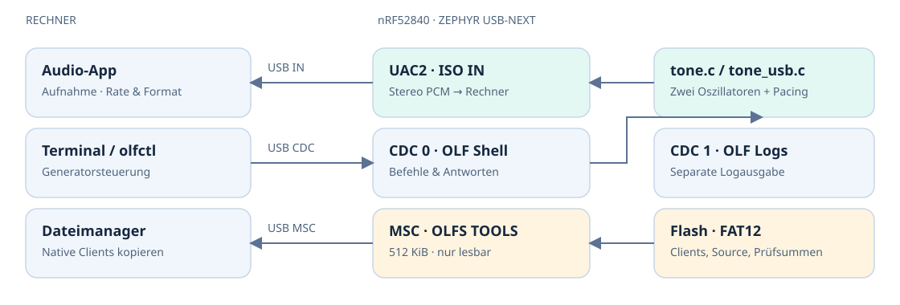
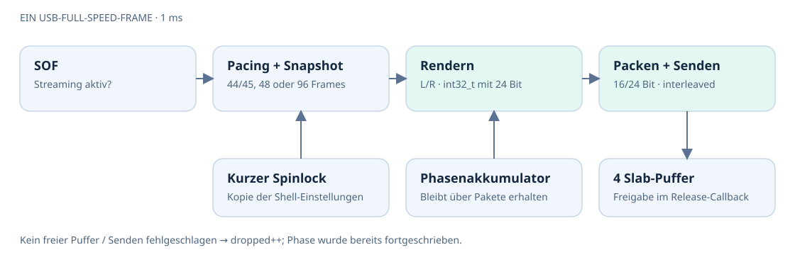
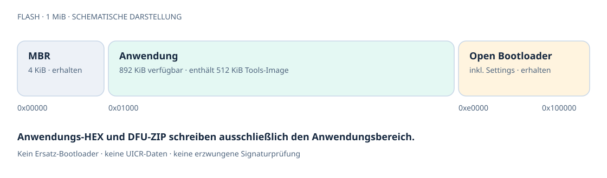

Präzise Signale.
Durchgängige Dokumentation.
Architektur, Signalpfad und Werkzeuge für OLFs Signal Generator.
Ein Dongle. Vier USB-Funktionen.
Hersteller: eisenzelt.de. USB-Kennung: VID 0x16d0 / PID 0x1471. Ein digitaler Stereo-Signalgenerator auf dem nRF52840: Audio zum Rechner, eine Shell zur Steuerung, ein separater Logport und die passenden Konsolenapps direkt im Flash.

NCS 3.2.1 · Board nrf52840dongle/nrf52840 · originaler Nordic USB Open Bootloader · MCUboot deaktiviert. Archivierte Bootloader-Konfigurationen sind kein Bestandteil des regulären Builds.
Vom Checkout zum USB-DFU.
Die Befehle werden im Projektverzeichnis ausgeführt. Der Buildhelfer ist für die lokale Nordic-Installation auf diesem macOS-Rechner vorkonfiguriert. Er lädt die Umgebung aus der Toolchain und startet west build --sysbuild.
python3 scripts/build_firmware.py --pristine
python3 scripts/package_openbootloader.py
/opt/nordic/ncs/toolchains/322ac893fe/bin/python bootloader/verify.pyVoraussetzungen: NCS 3.2.1, die zugehörige Toolchain, Python 3 und nrfutil mit nrf5sdk-tools. Für andere SDK-Pfade unterstützt der Buildhelfer --sdk und --toolchain, für ein anderes Ausgabeverzeichnis --build-dir. Paket- und Prüfscripts verwenden derzeit fest build/.
- BuildBei Board- oder Bootloaderwechsel mit
--pristine. Danach genügt ein inkrementeller Build. - PaketDas Paket nach jedem Firmwarebuild neu erzeugen. Nordic DFU, Hardwareversion 52, Application-Version standardmäßig 1.
- PrüfenLayout, HEX und DFU müssen zusammenpassen. Ergebnis:
build/openbootloader-verification.json. - InstallierenRESET → rote LED pulsiert → nRF Connect for Desktop / Programmer → Dongle auswählen → Anwendungs-HEX hinzufügen → Write.
nrfutil nrf5sdk-tools dfu usb-serial -pkg build/multi_cdc_dfu.zip -p PORTPORT ist der Bootloader-Port, beispielsweise COM5 oder /dev/cu.usbmodem…. Shell- und Logport erscheinen erst mit laufender Anwendung. Ein vorhandener originaler Bootloader erlaubt USB-DFU ohne SWD.
| Artefakt | Verwendung |
|---|---|
build/multi_cdc_vscode_ready/zephyr/zephyr.hex | Anwendung für Programmer |
build/multi_cdc_dfu.zip | Nordic USB-DFU |
build/merged.hex | Beim aktiven Build ebenfalls nur Anwendung |
build/olfs-openbootloader-bundle.zip | Vorbereitetes Paket; nach Änderungen separat aktualisieren |
Die Orientierung im Quelltext.
Die Trennung zwischen reiner Signalberechnung und Zephyr-/USB-Anbindung ermöglicht Hosttests ohne Board.
| Datei / Verzeichnis | Verantwortung | Typische Änderung |
|---|---|---|
src/main.c | USB-Deskriptoren, Klassenregistrierung, Initialisierung | Produktname, USB-Komposition |
src/tone.c | DDS-Oszillatoren, Stereo-Rendering, Pacing, PCM-Packing | Neue Wellenform, Signalmathematik |
src/tone.h | Gemeinsame Typen und Audio-Grenzen | Renderer-API |
src/tone_usb.c | USB-Callbacks, Puffer, Einstellungen, gen-Shell | Befehle, Streamingverhalten |
src/gpio_app.c | LED und gpio_app-Logquelle | GPIO-Diagnose |
src/tools_disk.c | Read-only-Diskzugriff auf eingebettetes FAT-Image | MSC-Diskverhalten |
app.overlay | UAC2-Clock, Kanäle, Basisaudioformat, CDC-Zuordnung | USB-Topologie |
prj.conf | Zephyr-Funktionen, Shell und Logging | Kconfig-Einstellungen |
cmake/ | Projektlokale SDK-Anpassungen und FAT-Einbettung | Integration mit neuer SDK-Version |
scripts/ | Build, Paketierung und Quelltext-Transformationen | Buildworkflow |
host/olfctl.c | Native Windows-/POSIX-Konsolenapp | Hoststeuerung |
tests/ | Signal-, ELF-, FAT-, SCSI- und Clienttests | Regressionsprüfung |
pm_static.yml | Statische Flash-Partitionierung | Speicherlayout |
main() initialisiert zuerst das Tools-Laufwerk, dann die Audio-Callbacks und danach USB. Fehler werden zurückgegeben; vor erfolgreicher Enumeration steht der CDC-Logport noch nicht zuverlässig zur Verfügung.
Ein Samplepfad mit klaren Zuständigkeiten.

Renderer
Jeder Kanal besitzt einen 32-Bit-Phasenakkumulator. Die Schrittweite ist floor(f × 2³² / fs). Sinus verwendet eine Tabelle mit 1025 Einträgen und linearer Interpolation; Dreieck und Rechteck entstehen direkt aus der Phase.
Intern: vorzeichenbehaftete 24-Bit-Werte in int32_t. Amplitude bezeichnet den Spitzenwert in Prozent des digitalen Vollbereichs.
Streaming
Die Shell schreibt Einstellungen unter einem kurzen Spinlock. Der Audio-Callback arbeitet auf einer Kopie; Rate und Samplebreite sind atomare Werte. Vier Slab-Puffer werden ohne Warten angefordert und nach USB-Freigabe zurückgegeben.
Bei fehlendem Puffer oder Sendefehler steigt dropped. Die Phase läuft dabei weiter. packets zählt erfolgreich eingereihte Pakete.
44,1 kHz ohne Rundungsdrift im Framezähler
tone_next_frames() akkumuliert die Abtastrate, teilt durch 1000 und behält den Rest. Bei 44,1 kHz entstehen neun Pakete mit 44 und eines mit 45 Stereo-Frames je zehn Millisekunden. 48 und 96 kHz ergeben konstant 48 bzw. 96 Frames pro Paket. Bei Ratenwechsel wird der Rest zurückgesetzt, die Oszillatorphase bleibt erhalten.
Stereo koppeln
Im gekoppelten Betrieb rendert nur der linke Kanal. Seine Samples werden rechts kopiert, und der rechte Phasenzustand wird angeglichen. Beim Einschalten der Kopplung werden die linken Einstellungen nach rechts übernommen. Nach dem Entkoppeln lassen sich beide Kanäle wieder unabhängig einstellen. Startzustand: gekoppelt, Sinus 1 kHz, 25 % Amplitude, Generator gestoppt.
Die Shell erlaubt 1–20000 Hz. Dreieck und Rechteck sind im aktuellen Renderer nicht bandbegrenzt; ihre Oberwellen können oberhalb der Nyquist-Frequenz aliasen. Auch 20 kHz Sinus hat bei 96 kHz nur 4,8 Samples pro Periode. Einzelne Samplepunkte bilden daher optisch keine glatte Kurve.
Formatwahl und Paketbudget.
Das Gerät bietet dem Rechner einen Audioeingang zur Aufnahme. Der Dongle sendet digital generiertes PCM über USB IN; dieser Pfad verwendet keine externe I²S-Hardware. Samplerate und Bittiefe wählt die Audio-App beziehungsweise das Betriebssystem.
| Rate | Frames / ms | Stereo 16 Bit | Stereo 24 Bit |
|---|---|---|---|
| 44,1 kHz | 44 / 45 | 176 / 180 Byte | 264 / 270 Byte |
| 48 kHz | 48 | 192 Byte | 288 Byte |
| 96 kHz | 96 | 384 Byte | 576 Byte |
Berechnung: Frames × 2 Kanäle × Bytes pro Sample. PCM ist Little Endian, links/rechts verschachtelt. 24 Bit werden in drei Byte gepackt; 16 Bit übernehmen die oberen 16 Bit des internen 24-Bit-Werts.
Alternate-Settings
Alt 0 deaktiviert den Stream, Alt 1 liefert 16 Bit, Alt 2 liefert 24 Bit. Beide aktiven Einstellungen teilen denselben ISO-IN-Endpunkt. Die beworbenen maximalen Paketgrößen betragen 384 und 576 Byte.
Warum die lokale Treiberanpassung nötig ist
Der nRF52840 verwendet USB Full Speed. Im unveränderten hier verwendeten Treiber wird der ISO-Puffer zwischen IN und OUT geteilt; je Richtung stehen dann nur 511 Byte zur Verfügung. 96 kHz / Stereo / 24 Bit benötigt 576 Byte pro Millisekunde. Die Projektanpassung verwendet ISOSPLIT OneDir für bis zu 1023 Byte ISO IN und sperrt ISO OUT. CDC- und MSC-Bulkverkehr bleibt davon verfügbar.
Das 1023-Byte-Limit ist eine Paketgrenze, keine Zusage für weitere Abtastraten oder den gleichzeitigen Gesamtdurchsatz. Aktuell werden ausschließlich 44,1 / 48 / 96 kHz angeboten. Audio, Dateizugriffe und CDC teilen sich USB-, CPU- und DMA-Ressourcen.
Steuern, beobachten, Fehler eingrenzen.
gen status
gen link off
gen wave sine left
gen freq 1000 left
gen amp 25 left
gen wave triangle right
gen freq 2000 right
gen amp 40 right
gen start
# Wieder koppeln / stoppen:
gen link on
gen stopKanalwahl: left, right, both. Frequenz: 1–20000 Hz; Amplitude: 0–100 %. Einstellungen bleiben bis zum Neustart im RAM.
log status
log enable dbg gpio_app
gpio_app led on
gpio_app led off
log enable inf gpio_appCDC 0 · OLF Shell
DTR aktivieren. Die Shell hat eine History von 512 Byte. In CoolTerm Raw Mode und Emulate Special Keys aktivieren; für korrekte Zeilenbearbeitung ein VT100-kompatibles Terminal verwenden.
CDC 1 · OLF Logs
Separater UART-Logbackend und printk-Konsole. Shell-Logging ist deaktiviert. gpio_app protokolliert die LED-Aktionen, nicht jeden GPIO-Zugriff.
Kein Audio oder unerwartete Darstellung?
Aufnahmegerät und tatsächliches Aufnahmeformat im Host prüfen, gen start ausführen und gen status mit dem Logport vergleichen. Bei Paketverlusten gleichzeitiges Kopieren vom Tools-Laufwerk beenden und erneut messen. Bei 20 kHz zur Beurteilung auch Spektrum und tatsächliche Samplerate heranziehen.
Native Clients direkt im Flash.
Die Hostapp spricht über den Shell-Port. Windows verwendet native Windows-APIs, Linux und macOS POSIX. Auf dem Zielrechner sind Python, Java und .NET nicht erforderlich.
| Datei | Ziel |
|---|---|
OLF-WIN.EXE | Windows x64 |
OLF-WARM.EXE | Windows ARM64, nativ |
OLF-LX64 | Linux x86_64, statisch |
OLF-LARM | Linux ARM64, statisch |
OLF-MAC | macOS 11+, Universal Intel / Apple Silicon |
python3 host/build_clients.py --zig /pfad/zu/zig
python3 scripts/build_firmware.py
python3 scripts/package_openbootloader.pyDer Client-Build benötigt macOS mit Xcode-Tools und Zig 0.14.1. Er erzeugt Binärdateien, SHA256.TXT und BUILD.TXT mit Quelltext- und Binärhashes. Der FAT-Generator lehnt abweichende Quellen oder Binärdateien ab. Das Download-ZIP und das Installations-Bundle werden von diesen drei Befehlen nicht automatisch aktualisiert.
Read-only bis zur SCSI-Ebene
make_tools_disk.py erzeugt ein deterministisches FAT12-Image von 512 KiB. Die Assembly-Einbettung über .incbin legt es konstant im Flash ab. Kein vollständiges Image wird ins RAM kopiert. Der Disk-Treiber lehnt Schreibzugriffe mit -EROFS ab; die lokale SCSI-Anpassung meldet Schreibschutz und verweigert WRITE10 mit DATA_PROTECT.
# Windows ARM64, PowerShell:
.\OLF-WARM.EXE --list
.\OLF-WARM.EXE --port COM7 status
# macOS, nach Kopieren auf den Rechner:
chmod +x OLF-MAC
./OLF-MAC --port /dev/cu.usbmodemXXXX statusAndere Terminals vor Verwendung desselben Ports schließen. Die Windows-Dateien besitzen keine Authenticode-Signatur; die Mac-Datei ist ad-hoc signiert. Windows-ARM64 wurde als ARM64-PE geprüft, ein Laufzeittest auf Windows ARM64 steht aus.
Ein Layout, das den Werksbootloader erhält.

pm_static.yml definiert die Partitionen. Der Linker prüft den Start bei 0x1000 und das Ende unterhalb 0xe0000. bootloader/verify.py kontrolliert zusätzlich HEX-Adressen, Konfiguration, Partitionen, Vektortabelle und DFU-Payload samt Hash.
Das aktive Nordic-DFU-Paket ist unsigniert. Der originale Open Bootloader erzwingt keine kryptografische Signaturprüfung. Der DFU-Hash prüft Konsistenz, keine Herkunft. Vorhandene private Schlüssel unter signing/private/ werden nicht benötigt und dürfen nicht in Veröffentlichungen gelangen.
Die alten MCUboot- und nRF5-Secure-DFU-Konfigurationen liegen in bootloader/archive/ beziehungsweise den LEGACY_*-Dokumenten; vorhandene Artefakte liegen unter artifacts/. Bei bereits ersetzter Boot-Kette stellt ein reines Anwendungsupdate den originalen Bootloader nicht wieder her.
SDK-Anpassungen nachvollziehbar halten.
Das installierte SDK wird nicht editiert. CMake erzeugt angepasste Quelltexte im Buildverzeichnis. Die Vorbereitungsscripts erwarten konkrete Quelltextanker und brechen ab, wenn die erwartete SDK-Struktur nicht mehr passt.
| Integration | Transformation | Prüfung nach SDK-Upgrade |
|---|---|---|
nrf52840_iso_in.cmake | ISO-Puffer für IN, ISO OUT gesperrt | Endpunktgrenzen und 96-kHz-Aufnahme |
uac2_formats.cmake | Zweites aktives Format + Formatwechsel-Hook | ELF-Deskriptoren und Host-Formatwechsel |
tools_disk.cmake | FAT-Einbettung + Read-only-SCSI | FAT-Hashprüfung und SCSI-Harness |
Bei einem SDK-Upgrade zuerst die Transformationen mit dem neuen Original vergleichen, dann sauber bauen und die unten genannten Prüfungen ausführen. Ein erfolgreiches Kompilieren bestätigt noch keine Enumeration oder Audioübertragung auf Hardware.
Prüfen, was das Artefakt tatsächlich enthält.
# Nordic-Python enthält die benötigten ELF-/HEX-Pakete:
PY=/opt/nordic/ncs/toolchains/322ac893fe/bin/python
ELF=build/multi_cdc_vscode_ready/zephyr/zephyr.elf
"$PY" bootloader/verify.py
"$PY" tests/verify_usb_audio.py "$ELF"
"$PY" tests/verify_tools_disk.py build/multi_cdc_vscode_ready/generated/olf_tools.img "$ELF"
# Renderer ohne Zephyr auf dem Host:
cc -std=c11 -Wall -Wextra -Werror -fsanitize=address,undefined \
-Isrc src/tone.c tests/tone_test.c -lm -o /private/tmp/olf-tone-test
/private/tmp/olf-tone-test
# Nativer Client gegen simulierte serielle Shell:
python3 tests/host_client_test.py host/dist/OLF-MAC
# Tatsächlich generierter SCSI-Code mit simuliertem Medium:
python3 tests/msc_readonly_test.py \
build/multi_cdc_vscode_ready/generated/usbd_msc_scsi_readonly.c \
/opt/nordic/ncs/v3.2.1/zephyr/subsys/usb/device_next/class| Ebene | Nachweis | Grenze |
|---|---|---|
| Signaltests | Samplewerte, Packing, Stereo, Kontinuität und Pacing | Kein USB-Timing |
| ELF / FAT / DFU | Deskriptoren, Dateiinhalte, Hashes, Flashgrenzen | Keine Host-Enumeration |
| PTY / SCSI-Harness | Clientprotokoll und echter SCSI-Code mit Mocks | Kein Windows-/USB-Hardwaretest |
| Dongle am Host | DFU, Aufnahme, Ratenwechsel, parallele USB-Last | Steht für diesen Stand noch aus |
Vor einer Firmwarefreigabe
Auf dem Zielgerät USB-DFU und erneuten RESET prüfen; alle sechs Rate-/Formatkombinationen aufnehmen; beide Kanäle unabhängig und gekoppelt testen; Paketverluste unter gleichzeitigem MSC-/CDC-Verkehr beobachten. Windows ARM64 zusätzlich mit dem nativen Client testen. Prüfungen und Host-/Firmwareversionen im Freigabeprotokoll festhalten.